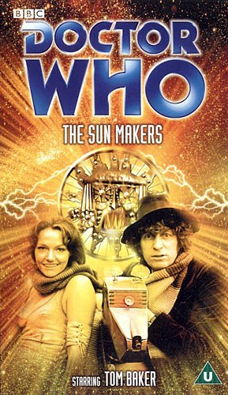
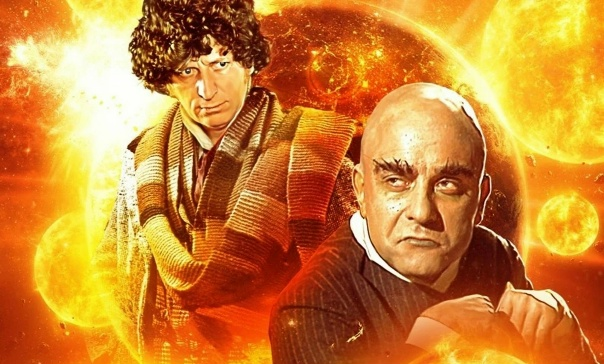
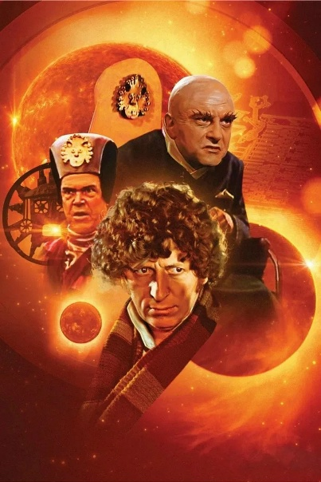

Эра Четвертого Доктора (15 сезон)
<<< НАЗАД ||| 4. Создатели солнц ||| ДАЛЬШЕ >>>
Субтитры: Русские и Английские |  |
|---|---|
с обновлением визуальных эффектов (cunningmunki) Субтитры: отсутствуют | |
The Sun Makers
Дата выхода: 26 ноября - 17 декабря 1977
Формат: 4 эпизода по 25 мин.
 |  |
Доктор и Лила оказываются на Плутоне, где человечество живёт под гнётом Компании — корпорации, обложившей людей налогами за каждый вздох, а воздух накачанной подавляющим волю газом. Восстание подземных бродяг и знакомство с истинным лицом власти — Сборщиком, инопланетной сущностью, завоевывающей миры экономикой, а не оружием. Едкая сатира Роберта Холмса на налоговую систему и корпоративное порабощение, действие которой разворачивается в мрачных коридорах Плутона под светом искусственных солнц.
 VHS - июль 2001 | DVD - 1 августа 2011 |  Blu-ray - 18 марта 2024 * Версия в нашей группе |
|---|





Трейлер: